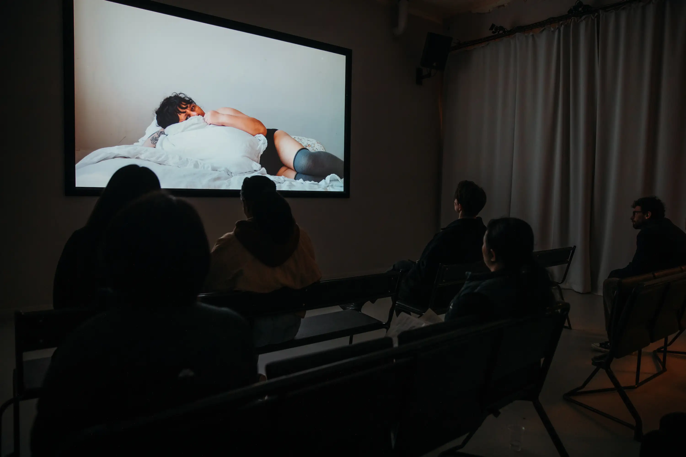
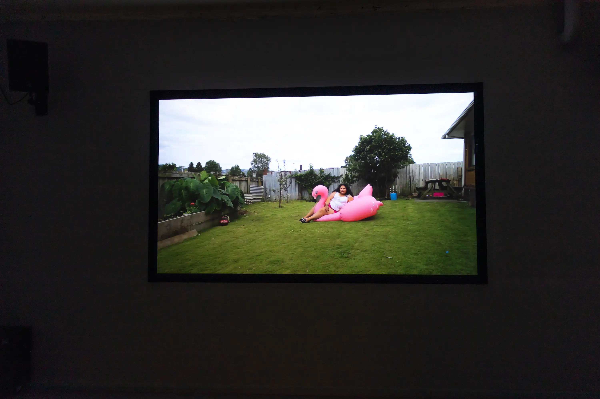
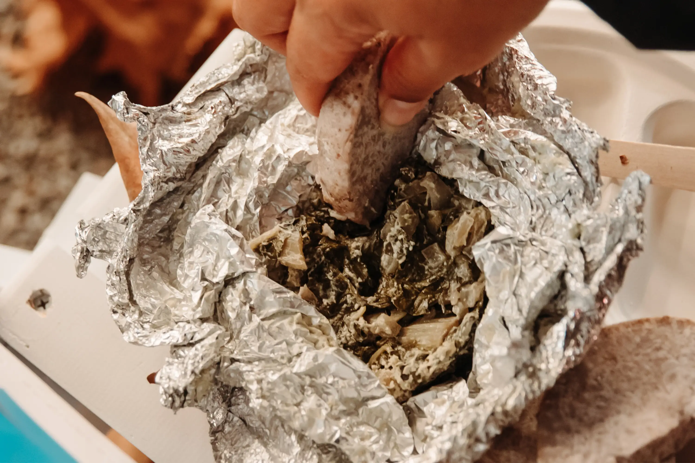
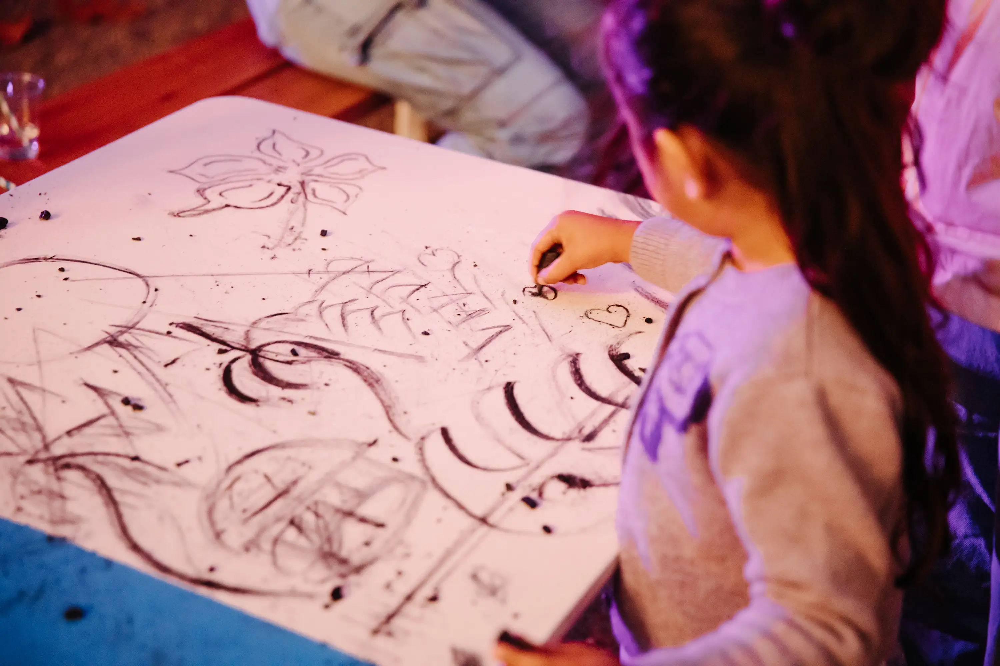
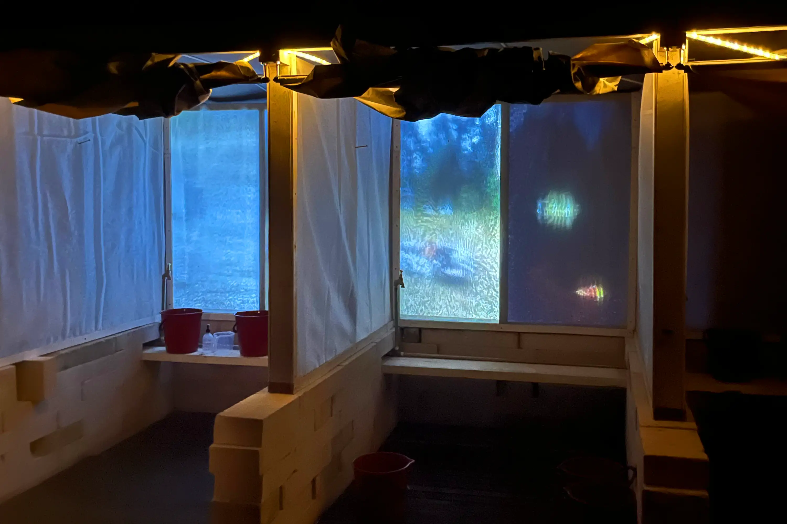
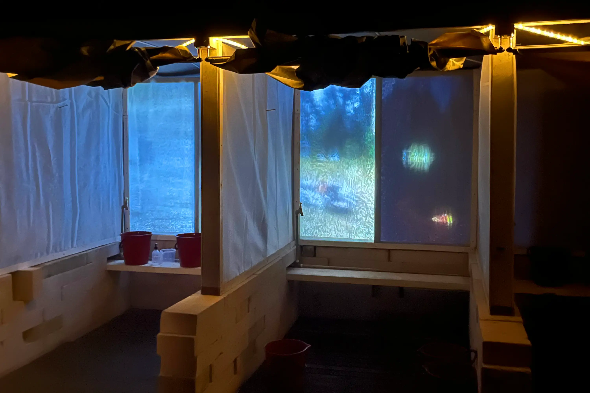

We think we know who we are, but we’re not sure. We also don’t know what we’re doing,
but we’re still here.
Lomiga Lua: i Luga ‘o le Moana ... Fa'amanatuina ‘o le Gagana,
translating to ‘Issue Two: Over the Ocean/Blue … Language Celebration’,
is a celebration of Vaiaso o le Gagana Sāmoa (Sāmoan Language Week) that took place
on Tuesday 30 May, 2023 at Yálla-birr-ang, Wurundjeri Woiwurrung Country.
Through food and art, we hoped to cultivate a welcoming and community-led environment
for people with Sāmoan ancestry to come together and celebrate language.
By providing a space for the exploration of collective and individual Sāmoan
identities, we aim to promote reclamation of pre-colonial ways of knowing while
allowing for diasporic interpretations of culture.
The event featured an array of artworks and activities by Sāmoan practitioners based
in Naarm and beyond. Included were moving image works by
FAFSWAG,
Louisa Afoa,
Luce Nguyễn-Hunt and
Natasha Matila-Smith,
as well as an umu, ‘Malo Lelei’, run by Peter Lemalu, and collective ‘ie lavalava mark making.
The event is presented by Le Phem Era, in collaboration with artist
Peter Lemalu
and with support from
West Space,
Centre for Projection Art,
The Social Studio,
Hope Street Radio,
Composite Moving Image
and Collingwood Yards.
A very special thank you to Peter Lemalu for being so instrumental to the project,
to Sia Tamausu for coming on board and to the artists, Louisa Afoa, Luce Nguyễn-Hunt,
Natasha Matila-Smith as well as Tanu Gago and the rest of FAFSWAG, for allowing us to
showcase their work.
A huge thank you to Anthea Bonnici, Cassandra Lemalu,
Emily Simek,
Fiona Chen,
Joy Zhou,
Lena Skipper and Paul Lemalu for helping us run the event and to everyone else who
showed up to support.
Photography by Gracie Sietu.
Printing by Tree Paper Gallery.
Link to event roomsheet
Link to Composite Moving Image event page
Peter Lemalu, 'Malo Lelei', 2023. Graphic design by Leitu Bonnici.
 Luce Nguyễn-Hunt, ‘Aue My Endless Love’, 2022. Multichannel video with sound, 10 minutes 14 seconds.
Luce Nguyễn-Hunt, ‘Aue My Endless Love’, 2022. Multichannel video with sound, 10 minutes 14 seconds.

Natasha Matila-Smith, ‘7 Minutes in Heaven’, 2021. Moving image, 7 minutes.
FAFSWAG, ‘Tulouna Le Lagi’, 2022. Moving image, animation, 5 minutes. Artist: Pati Tyrell, animation: Tanu Gago, writer: Pati Tyrell, music and editing: Pati Tyrell, voice over: Pati Tyrell. Originally commissioned by CIRCUIT Artist Film and Video Aotearoa New Zealand.

Louisa Afoa, ‘Pink Flamingo II, A Pool is not the Ocean’, 2017. Moving image, 3 minutes 56 seconds.
 Peter Lemalu, 'Malo Lelei', 2023. With assistance from Paul Lemalu.
Peter Lemalu, 'Malo Lelei', 2023. With assistance from Paul Lemalu.


 Leitu Bonnici, Peter Lemalu, Sia Tamausu and participants, 'Afai e te iloa, e te iloa', 2023.
Leitu Bonnici, Peter Lemalu, Sia Tamausu and participants, 'Afai e te iloa, e te iloa', 2023.


 Impromptu siva performance by Sia Tamausu.
Impromptu siva performance by Sia Tamausu.


 Leitu Bonnici in collaboration with Alitasi Fatu, Denise Roberts, Moira Roberts and Numiamalepule Adrian Tuitama, 'Lomiga Lua: i Luga 'o le Moana', 2023.
Leitu Bonnici in collaboration with Alitasi Fatu, Denise Roberts, Moira Roberts and Numiamalepule Adrian Tuitama, 'Lomiga Lua: i Luga 'o le Moana', 2023.


 
